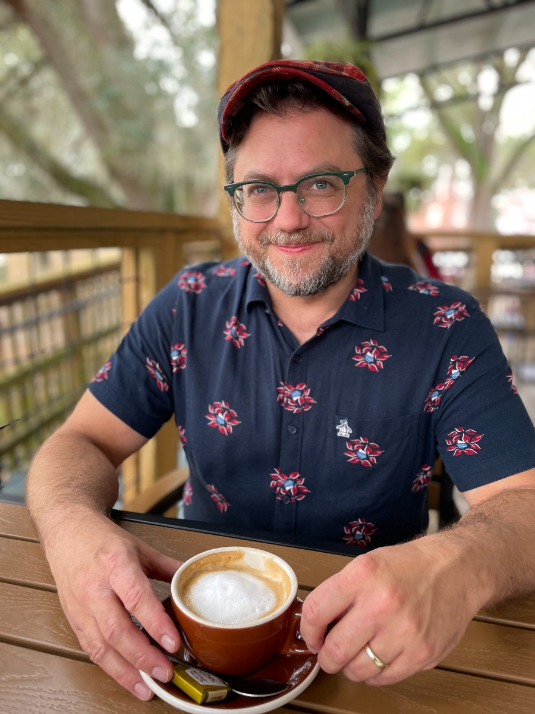

Meet the Designer
My twin passions are education and creative collaboration.

Black Dog Café, Tallahassee
As an Educator
At a glance
- 20 years, 6 universities, more than 1,200 students
- 13 courses built from scratch
- Consistent 4–5 out of 5 on student evaluations
- 8 courses moved online in D2L Brightspace (18 course runs, 2020–2022): recorded and captioned video lectures, authored quizzes and discussion boards, and tracked engagement analytics
- MOOC content contributor and public lecturer for two opera premieres by Opera Philadelphia
- Tailor-made private lessons to over 500 students, adults and children
Teaching Philosophy and Style
- Close alignment with learning objectives
- Assessments designed to test deep engagement, not just memorization: mostly analytical writing and creative projects, rather than exams
- Translating complex theoretical material into digestible, engaging learning, especially for learners who come to the material skeptical
- Strong public-facing communication skills, which carry into instructional design, learning facilitation, and AI prompting
- Appreciation for gray areas: real knowledge production often involves addressing multiple conflicting ideas at once
As a Designer
At a glance
- 25 years as a composer, arranger, songwriter, and sound designer
- 33 contemporary classical pieces composed, many on commission, across a variety of instrumentations
- 30 plays (music and/or sound design), 3 film scores, 2 albums (orchestral arrangements)
- 8 large multimedia collaboration projects
Design Skills
- Constant adaptation to new technology: engraving software, digital audio workstations, synthesizers, and much more.
- Big picture: envisioning the structure of an entire piece before any note is written, crafting flow from section to section that is both logical and engaging
- Micro-decisions: thousands of details, each decided to work in the moment and align with the piece’s aesthetic goals, just as every aspect of my learning modules aligns with their learning objectives
As a Business Professional
- Project management: every piece has been a project with stakeholders whose needs I have to meet, including delivering finished work on time and to spec
- Creative collaboration: my favorite part of any design project; I’ve worked with dozens of visual artists, choreographers, dancers, theatre artists, filmmakers, and other creative professionals. I love being part of a team working toward the same goal
Leadership
- As Director of Undergraduate Studies at GSU, I oversaw the curricula for 350 students and 40 full-time faculty, and chaired curriculum committees
- Also at GSU, as one of four College of the Arts fellows on the university’s Quality Enhancement Plan, I reported assessment data from five course sections and audited curricula against career-readiness competencies
- As faculty at GSU, I designed and conducted 27 individualized music theory comprehensive exams for graduate students, and mentored 9 aspiring professionals about to hit the field through their capstone projects, graduate recitals, and graduate school and job applications
Skills and Tools
Design
Needs analysis · learning objectives · curriculum and course design · rubric and assessment design · rules-based scoring · storyboarding · program assessment and reporting · accessibility (Section 508, WCAG 2.1 AA)
Tools
Rise 360 · Microsoft 365 (PowerPoint, advanced; Teams; SharePoint) · Canvas · D2L Brightspace · Figma · Pro Tools · Final Cut Pro · DaVinci Resolve · AI-assisted build and drafting (Claude, ChatGPT, Gemini)